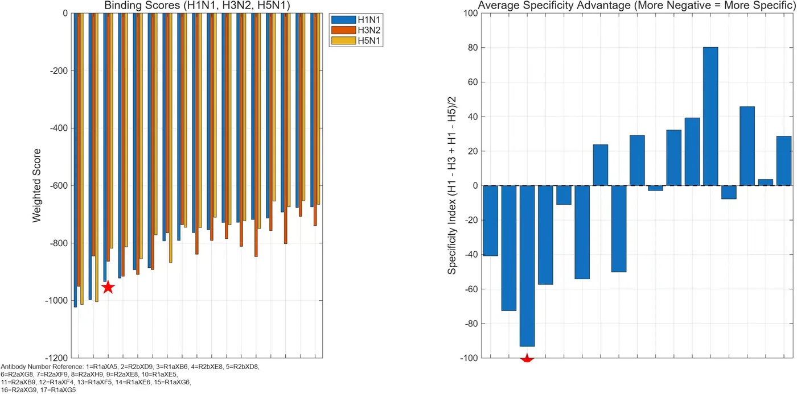
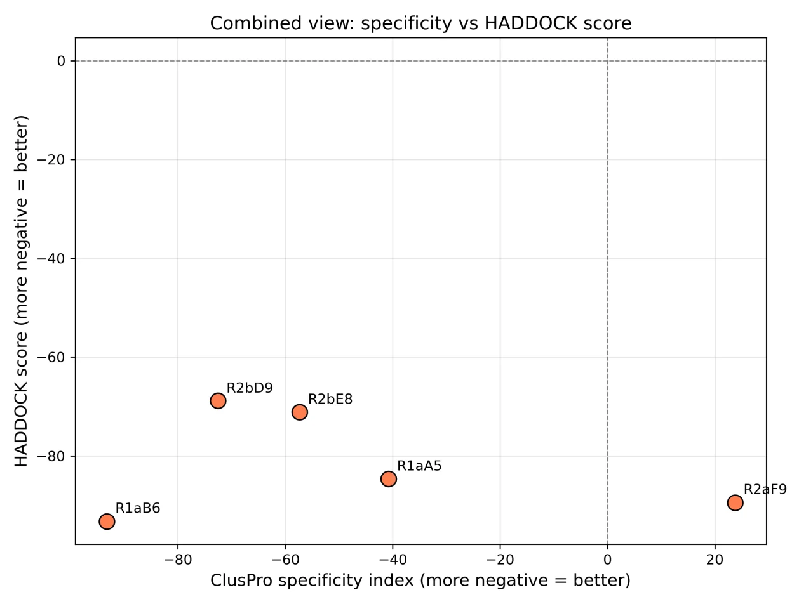
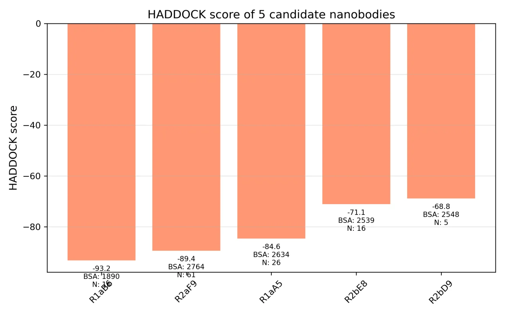
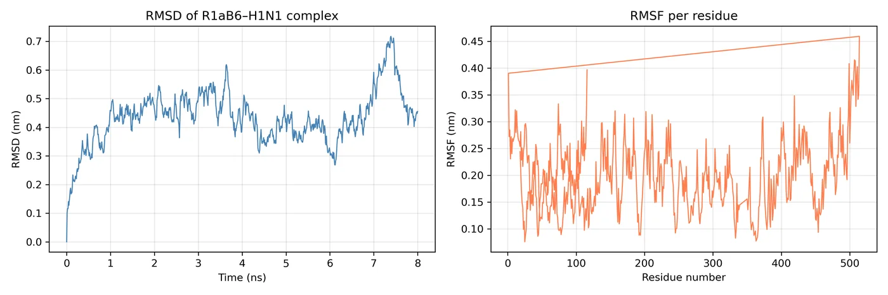

Best Model Award
We have 17 nanobody sequences, none of which has an experimental structure. We first use molecular docking to rank them, then decide which few are worth taking into experiments.
ClusPro rigid docking ranks the 17 candidates by their scores against three influenza A HA antigens (H1N1, H3N2, H5N1), and a specificity index quantifies which candidate is more biased toward H1N1. HADDOCK 2.5 semi-flexible refinement provides the HADDOCK score, cluster size, and buried surface area (BSA); PyMOL and SPICE give the interface residues and interaction types. GROMACS molecular dynamics and MM-GBSA check whether the complex is stable in water and what its binding free energy is. Docking results of the candidates against unrelated viral antigens (SARS, HIV1, RSVF) are used to rank cross-reactivity on a relative scale. This converges on a single lead candidate, R1aB6, and flags ARGB:31 as a target for subsequent mutagenesis studies.
These values come from molecular docking and simulation and are computational predictions; Section 9 of the modeling document states that there is "no experimental validation." Detection sensitivity, specificity, limit of detection, quantitative range, and clinical usability have not been measured. The 3D view shows antigen-source structures, not the project's docking complex.
Overview
EchoYeast requires a nanobody that recognizes H1N1 HA while keeping cross-reactivity with other subtypes and unrelated viruses as low as possible, yet none of the 17 candidate sequences has an experimental structure. Cloning, expressing, and measuring binding for each candidate would be costly and time-consuming. Molecular docking first provides a ranking and binding modes, so that follow-up experiments can focus on a few candidates.
The core question is which nanobody can bind H1N1 HA with the highest affinity and specificity. The workflow must produce four outputs: candidate ranking, specificity quantification, an atomic-level binding mode, and an assessment of complex stability under physiological conditions.
The workflow proceeds as "question → hypothesis → method → output → validation → design decision," where the output of each step is the input of the next.
The questions, methods, and outputs of the seven stages:
| Stage | Question Addressed | Method | Output |
|---|---|---|---|
| 1 | Which antibody binds H1N1 best? | ClusPro rigid docking (untreated antigen) | Specificity-index ranking |
| 2 | Does the processed antigen affect binding? | ClusPro rigid docking (post-complex-processing antigen) | Cross-validate the binding mode |
| 3 | Does it cross-react with unrelated viruses? | ClusPro rigid docking (SARS / HIV1 / RSVF) | Cross-reactivity risk |
| 4 | Is the binding mode stable? | HADDOCK 2.5 semi-flexible refinement | HADDOCK score、BSA |
| 5 | Which residues drive binding? | PyMOL + SPICE | Interface residues, interaction types |
| 6 | Is the complex stable in water? | GROMACS MD + MM-GBSA | RMSD、RMSF、Rg、ΔG_bind |
| 7 | What should be validated experimentally? | Integrated analysis | Hotspot residue (ARGB:31) |
Whether the lead candidate R1aB6 can recognize HA on the yeast surface and whether the reporting pathway is activated must be answered by subsequent PAGER receptor expression and induction experiments, with readout by flow cytometry measuring yEGFP fluorescence and X-Gal staining. These experiments have not yet been performed.
Interactive Demo: Nanobody × Influenza A HA Docking Cards
Drag a card to the center, or click a card to select it. After choosing one antibody and one antigen, the result panel shows the docking result for that combination, and the ranking panel shows the 5 candidates ranked by specificity index. The demo covers only the 5 candidates with numerical values in the document.
Nanobodies (5 candidates)
3D Structure & Ranking
Click "Load 3D Structure" to fetch and display the selected structure. The 3D library is downloaded only at that step.
Influenza A HA Antigens (3 types)
Data are from Sections 5.3 and 5.4 of the modeling document and are computational predictions. The "target subtype / control subtype" labels on the cards follow the document's convention: the specificity index is built from the score difference between H1N1 and H3N2/H5N1; the control subtypes are used to quantify specificity, not as detection targets.
Model Assumptions
Biological Assumptions
On the antigen side, we use HA structures deposited in RCSB to represent the native conformation, and we use two states as controls: the directly downloaded "untreated antigen," and the "post-complex-processing antigen" extracted from an antibody–antigen complex to represent the bound-state conformation. The recognition element has no such convenience: none of the 17 candidate nanobodies has an experimental structure in the PDB, they are about 114–123 residues long, and they carry no His-tag or linker, so a structure-prediction model must substitute for a crystal structure.
The binding interface is treated regionally: the active residues on HA (HA1 25, 45–49, 305–307, 332; HA2 361–364, 381, 382, 384, 385, 388, 391, 392, 395, 396, 399) and the CDR residues of the nanobody are taken as the range participating in binding. Cross-reactivity is ranked relatively using the average docking score of candidates against unrelated viral antigens (SARS, HIV1, RSVF); it does not constitute a quantitative metric.
Computational & Mathematical Assumptions
| Assumption | Rationale | Potential Bias |
|---|---|---|
| Receptor treated as rigid in ClusPro | Rapidly screens out many candidates | May miss induced-fit effects |
| Interface treated as semi-flexible in HADDOCK | Allows side-chain rearrangement | Backbone remains fixed |
| Implicit solvent used in docking | Standard practice for protein–protein docking | Ignores explicit water bridges |
| Amber99sbildn force field used | Well-validated for protein systems | Inherent approximations of the force field |
| 10 ns MD suffices to check stability | Standard preliminary-validation timescale | May miss slow conformational changes |
Therefore the conclusions apply only to relative comparison among candidates: they provide ranking and interface description, and do not involve absolute binding affinity or detection performance.
Data & Parameters
Target Proteins & Antigen Processing
The three influenza A HA antigens are all taken from structures deposited in RCSB; the documented processing is: remove antibody chains, remove glycosylation and water molecules, split HA1 and HA2 into independent chains, and unify chain IDs (HA as A/B, nanobody as C).
| Antigen | Strain | PDB ID | Source | Resolution | Retained Chains |
|---|---|---|---|---|---|
| H1N1 HA | A/Puerto Rico/8/1934 | 9VH4 | RCSB | 2.80 Å | A = HA1, B = HA2 |
| H3N2 HA | A/Puerto Rico/8/1934-New York/55/2004 | 9VH5 | RCSB | 2.70 Å | A = HA1, B = HA2 |
| H5N1 HA | A/Jiangsu/NJ210/2023 | 9MQ2 | RCSB | 3.06 Å | A = HA1 (this entry deposited no HA2) |
The 3D view uses these three structures, trimmed per the documented convention to "HA chains only": antibody chains, glycosylation, and heteroatoms are removed, and coordinates are unchanged. Each entry is further noted below.
- 9VH4（H1N1 HA）：This entry is a co-crystal complex of HA with a single-domain antibody; per modeling document §5.1, the file has been trimmed to 'HA chains only.' The co-crystallized binder is not R1aB6 selected by this project.
- 9VH5（H3N2 HA）：Same as 9VH4, trimmed to HA chains only; the co-crystallized binder is not R1aB6 of this project.
- 9MQ2（H5N1 HA）：This entry deposited only the HA1 chain (residues 13–321), so residue 332 and all HA2 active residues listed in the document are absent from this structure; the page accordingly converges when labeling H5.
Nanobodies & Structure Prediction
The candidates are 17 brand-new nanobody sequences with no experimental structure in the PDB, about 114–123 residues long, and carrying no His-tag or linker; structure prediction uses a locally deployed AlphaFold2, taking high-confidence models with pLDDT above 90, and assigns the ligand chain ID as C. The predicted structures of the 5 candidates that entered refinement are self-hosted and shown in the "View Nanobody" button of the interactive demo above (single chain, produced by a structure-prediction model, not an experimental structure).
Scoring and refinement provide citable values only for 5 of these candidates (R1aB6, R2aF9, R1aA5, R2bE8, R2bD9); both the results section below and the interactive demo are limited to these 5. The remaining 17 did not enter the refinement stage and have no citable values.
Scoring Functions & Specificity Index
- ClusPro score:E = 0.40Erep − 0.40Eatt + 600Eelec + 1.00EDARS; the Top 10 conformations are retained for each "candidate × antigen" combination.
- Specificity index:( E_H1N1 − E_H3N2 + E_H1N1 − E_H5N1 ) / 2。A more negative value indicates better specificity for H1N1.
- HADDOCK 2.5:Rigid docking it0 → semi-flexible refinement it1 → water refinement itw, outputting HADDOCK score / cluster size / BSA (Ų). A more negative HADDOCK score indicates better interface quality.
- Dynamics & free energy:GROMACS molecular dynamics + MM-GBSA; force field Amber99sbildn, water model TIP3P, random seed gen_seed = 1.
- Positive control: re-docking of the experimentally resolved 9VH4 complex serves as the control for the docking pipeline.
Model Results
Screening & Ranking
Under the untreated antigen, the docking scores and average specificity advantage of the 17 candidates against the three influenza A HA antigens are as follows (the red flag marks the candidate with the best specificity). A more negative specificity index indicates that the candidate is more biased toward H1N1 relative to other subtypes.

The 5 refined candidates' scores and specificity indices under the untreated antigen:
| Nanobody | H1N1 | H3N2 | H5N1 | Specificity Index | Conclusion |
|---|---|---|---|---|---|
| R1aB6 | −933.9 | −863.4 | −817.9 | −93.25 | Selected |
| R2bD9 | −997.0 | −845.0 | −1003.9 | −72.55 | Rejected |
| R2bE8 | −921.7 | −915.6 | −813.1 | −57.35 | Rejected |
| R1aA5 | −1022.7 | −950.5 | −1013.4 | −40.75 | Selected |
| R2aF9 | −792.4 | −764.4 | −867.9 | 23.75 | Selected |
The ranking is R1aB6 > R2bD9 > R2bE8 > R1aA5 > R2aF9 (from most negative to least negative specificity index).
The same 5 candidates' results against the "post-complex-processing antigen":
| Nanobody | H1N1 | H3N2 | H5N1 | Specificity Index |
|---|---|---|---|---|
| R2bE8 | −928.1 | −897.2 | −951.3 | −3.85 |
| R2aF9 | −830.6 | −785.3 | −875.6 | −0.15 |
| R2bD9 | −842.5 | −796.0 | −930.3 | 20.60 |
| R1aB6 | −867.2 | −912.0 | −922.2 | 49.90 |
| R1aA5 | −874.6 | −953.1 | −1050.4 | 127.10 |
After switching to the processed antigen, all candidates' specificity indices become positive or near zero, indicating that antigen conformational processing markedly changes the specificity ranking. The document therefore takes the untreated-antigen results as the primary basis, on the grounds that the untreated antigen is closer to the native conformation.
Cross-reactivity risk is expressed as the average binding energy of candidates against unrelated viral antigens (SARS, HIV1, RSVF); a more negative value indicates stronger binding and higher cross-reactivity risk:
| Nanobody | SARS | HIV1 | RSVF | Mean Binding Energy | Cross-reactivity Risk |
|---|---|---|---|---|---|
| R1aA5 | −905.4 | −939.8 | −948.5 | −931.2 | Highest |
| R2bE8 | −840.5 | −936.6 | −894.7 | −890.6 | Higher |
| R2bD9 | −824.1 | −937.6 | −876.9 | −879.5 | Moderate |
| R1aB6 | −754.3 | −960.8 | −883.6 | −866.2 | Moderate |
| R2aF9 | −742.0 | −814.0 | −713.6 | −756.5 | Lowest |
HADDOCK Semi-flexible Refinement
Results after semi-flexible refinement of the 5 refined candidates against H1N1 HA:
| Nanobody | HADDOCK score | Cluster Size | BSA (Ų) |
|---|---|---|---|
| R1aB6 | −93.2 | 16 | 1890.1 |
| R2aF9 | −89.4 | 61 | 2764.4 |
| R1aA5 | −84.6 | 26 | 2634.4 |
| R2bE8 | −71.1 | 16 | 2538.9 |
| R2bD9 | −68.8 | 5 | 2548.0 |
The ranking is R1aB6 > R2aF9 > R1aA5 > R2bE8 > R2bD9. Plotting the two metrics together shows they do not always move in the same direction:


Binding Interface & Hotspot Residues
Interface analysis targets the best combination, R1aB6 with H1N1 HA. PyMOL gives 30 interface residues on the HA side (27–32, 44–53, 303–332, 358–396) and 24 residues on the nanobody side (CDR1 27–37, CDR2 44–65, CDR3 101–104). SPICE gives the following counts of interaction types:
| Interaction Type | Count |
|---|---|
| Total contacts | 61 |
| Hydrogen bonds | 19 |
| Salt bridges | 3 |
| Hydrophobic interactions | 39 |
The residues with the shortest distances and repeated occurrences are promoted to hotspots:
| Nanobody Residue | HA Residue | Interaction | Distance (Å) |
|---|---|---|---|
| ARGB:31 | ASNA:27 | Hydrogen bond | 2.086 |
| ARGB:31 | SERA:29 | Hydrogen bond | 2.180 |
| ARGB:31 | THRA:44 | Hydrogen bond | 3.097 |
| ARGB:31 | GLNA:51 | Hydrogen bond | 2.086 |
| ASPB:55 | THRA:30 | Hydrogen bond | 2.725 |
| THRB:54 | ASPA:31 | Salt bridge | 3.480 |
ARGB:31 participates in 4 hydrogen bonds; it is the hotspot residue proposed by the document and is written as a target for the subsequent R31A mutant study.
Dynamics & Binding Free Energy
The R1aB6–H1N1 HA complex was placed in a water box for molecular dynamics (10 ns (per the document body; see caveats), GROMACS, Amber99sbildn force field, TIP3P water model) to observe whether it is stable:
| Metric | Result |
|---|---|
| RMSD | 0.45 nm (document records as stable) |
| RMSF (interface) | < 0.17 nm |
| Rg | 3.87 nm (stable) |
| Hydrogen bonds | 462.1 ± 9.6 |

The binding free energy was estimated by MM-GBSA (gmx_MMPBSA 1.5.0.3, in kcal/mol):
| Energy Term | Value (kcal/mol) |
|---|---|
| ΔVDWAALS | −59.41 |
| ΔEEL | 5.22 |
| ΔEGB | 57.69 |
| ΔESURF | −7.23 |
| ΔTOTAL | −3.74 |
Document §9 states: MM-GBSA is based on only 10 frames, with large statistical error.
Conclusions & Design Decisions
Selected candidates (3):
- R1aB6：Best H1N1 specificity (untreated-antigen index −93.25), lowest HADDOCK score (−93.2), stable MD, moderate cross-reactivity risk, MM-GBSA binding free energy −3.74 kcal/mol. The document therefore selects it as the recognition element.
- R2aF9：Second-best HADDOCK score (−89.4), but the ClusPro specificity index is positive (+23.75); it has the lowest cross-reactivity risk yet poor H1N1 specificity.
- R1aA5：Third-best HADDOCK score (−84.6), but the ClusPro specificity index is weaker (−40.75) and the cross-reactivity risk is the highest.
Rejected candidates (2):
- R2bE8：Mid-range ClusPro specificity index (−57.35), fourth HADDOCK score (−71.1), higher cross-reactivity risk.
- R2bD9：Second-best ClusPro specificity index (−72.55), but the worst HADDOCK score (−68.8), indicating poor interface quality.
These results correspond to concrete design actions:
| Model Prediction | Design Decision |
|---|---|
| R1aB6 has the highest H1N1 specificity | Selected as the recognition element |
| ARGB:31 is a hotspot residue | Proposed the R31A mutant as a target for subsequent studies |
| R2bD9 and R2bE8 have higher cross-reactivity risk | Lowered priority |
What remains is experimental validation and model revision. The computational prediction and candidate selection steps are complete; the remaining two steps depend on subsequent wet-lab experiments.
Validation & Discussion
Both the ClusPro untreated-antigen ranking and the HADDOCK refinement rank R1aB6 as the best; PyMOL and SPICE each give the same set of interface residues; molecular dynamics checks complex stability in water; MM-GBSA gives the binding free energy; and the cross-reactivity assessment gives the relative position of off-target risk. The document also re-docked the experimentally resolved 9VH4 complex as a control for the whole pipeline.
- ClusPro (untreated antigen) and HADDOCK both rank R1aB6 as the top candidate.
- PyMOL and SPICE corroborate the same set of interface residues.
- Molecular dynamics shows the complex remains stable over the simulation time; the MM-GBSA binding free energy is −3.74 kcal/mol, consistent in sign with stable binding.
- The cross-reactivity assessment places R1aB6 at a moderate risk level, not in the highest tier.
Two inconsistencies:
- R2aF9 ranks second by HADDOCK score but has a positive ClusPro specificity index. Relying on only one metric would reverse the conclusion.
- R1aA5 has a larger interface area (BSA) than R1aB6 yet a lower HADDOCK score. Interface quality matters more than area size.
This round of modeling accomplished four things: it narrowed 17 candidates down to 1 lead molecules, provided an atomic-level binding mode, proposed testable hotspot residues, and reduced off-target risk through cross-reactivity assessment.
Limitations.
- In ClusPro the receptor is treated as rigid, which may miss induced-fit effects.
- Docking uses implicit solvent and ignores explicit water bridges.
- In HADDOCK the interface is semi-flexible, allowing side-chain rearrangement while the backbone stays fixed.
- 10 ns of MD may fail to capture slow conformational changes.
- MM-GBSA is based on only 10 frames, with large statistical error.
- The entire text has no experimental validation (document §9 states this).
Reproducibility. Parameters are recorded as follows:
| Item | Content |
|---|---|
| Software version | ClusPro、HADDOCK 2.5、GROMACS 2026.3、PyMOL、SPICE、gmx_MMPBSA 1.5.0.3 |
| Force field | Amber99sbildn |
| Water model | TIP3P |
| Random seed | gen_seed = 1 |
| Parameter files | The document says 'uploaded to GitHub (mdp_files/),' but the repository link is still to be filled in the document. |
Code and data availability. Software versions, force field, water model, and random seed are listed in the previous section; the molecular dynamics parameter files (mdp_files) are, per the document, uploaded to the code repository, but the repository address and public links to the input/output structure files have not yet been provided.